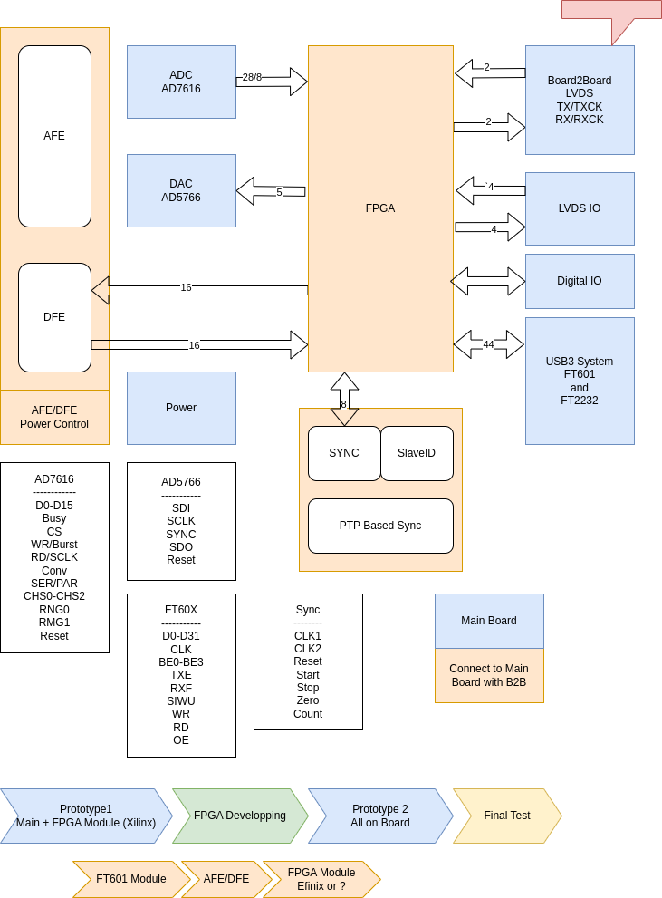
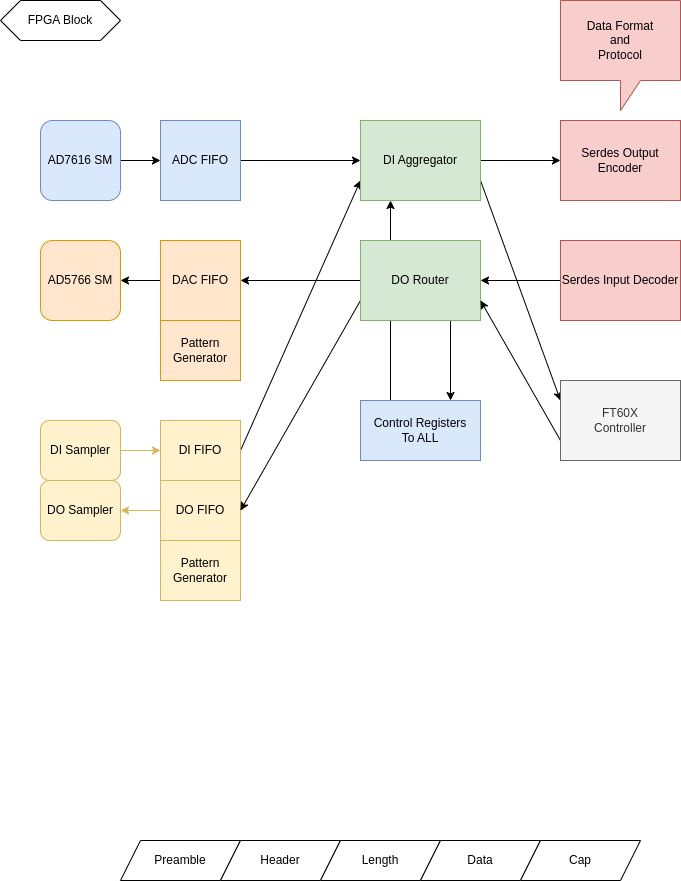
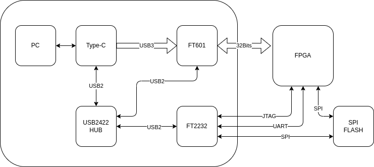
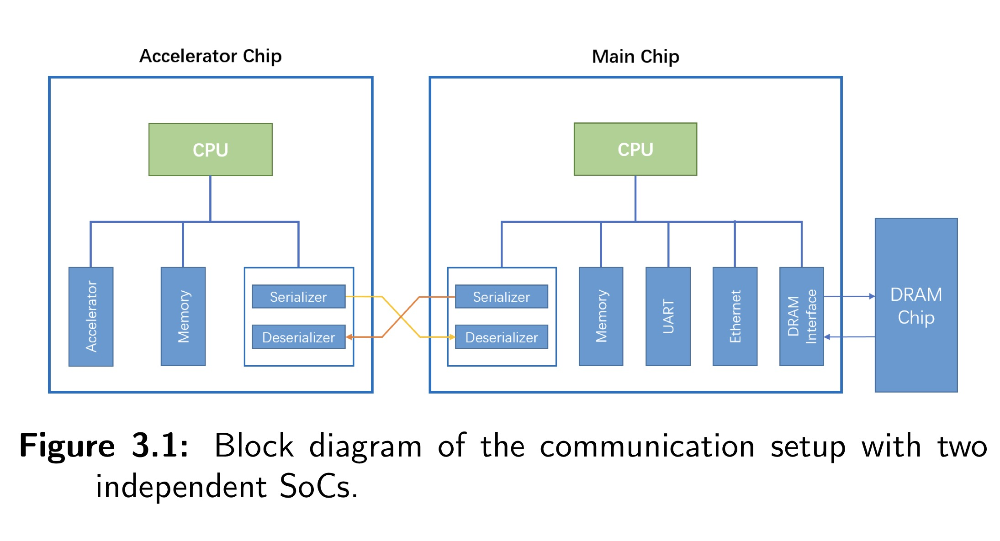
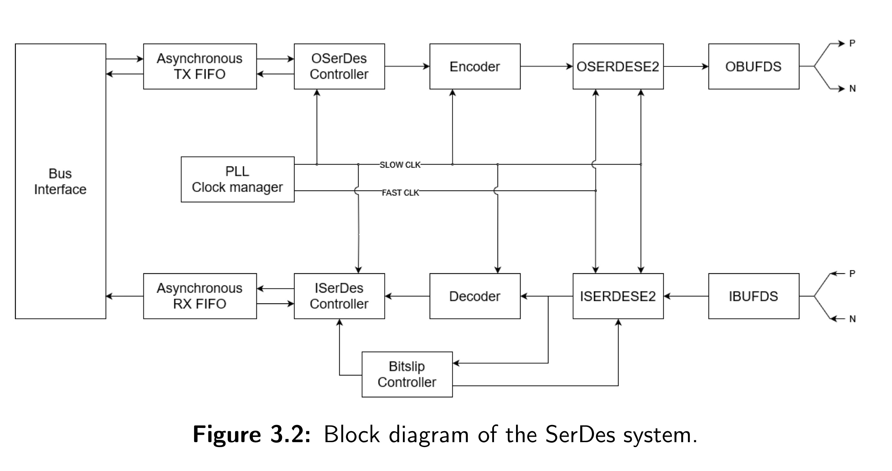
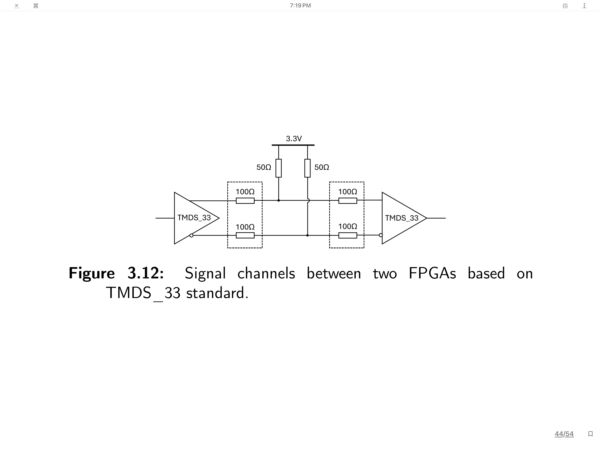

Expander 2
System Block

FPGA Internal

FT601 and USB Downlaoder

Efinix FPGA with RAM

| FPGA | Power | EEPROM |
|---|---|---|
| Intel Max10 | 3.3V | Embedded |
| efinix T20 | 1.2V Core 3.3V IO |
Embedded |
| efinix Ti60 | 0.95V Core 1.8V AUX 3.3V IO |
Embedded RAM and EEPROM |
Power Management for FPGAs


TI's Solution

JOB Breakdown
| JOB | Duration(W) | Description |
|---|---|---|
| Schematics | 2-4W | Use FPGA Module |
| PCB | 2-4W | |
| FPGA Design | ||
| ---FT601 | 2-4W | USB3 to PC |
| ---ADC SM | 2-4W | ADC Driver |
| ---DAC SM | 2-4W | DAC Driver |
| ---Pattern Gen | 2-4W | DAC/Digital Pattern |
| ---FIFO To PC | 2-4W | FIFO to PC |
| ---PC to FIFO | 2-4W | PC to FIFO |
| ---Serdes | 4-8W | FPGA 2 FPGA |
| FPGA Module Sch | 2-4W | Efinix or Other FPGA module |
| FPGA Module PCB | 2-4W | |
| Analog Front End | 1-2W | Input Voltage Range Selection ? |
AD7616 ADC

AD5766 DAC

FT60X


ONIX Breakout Board


Resource Sharing between SoCs through a Dedicated SerDes-channel
Resource Sharing between SoCs through a Dedicated SerDes-channel
Lund University LUP Student Papers


